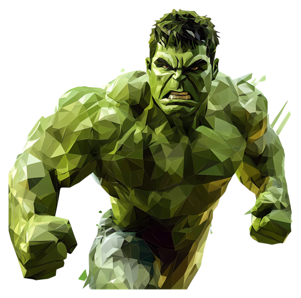

HemulkyHemulky
Hemulky drops onto your screen exactly when you need a nudge.
Free · macOS 12+ & Windows 10+
Set a time, Hemulky does the rest.
Download for Mac or Windows and open from the menu bar or tray.
Type your message and pick the exact time.
Hemulky hits your screen when it’s time.
Watch Hemulky smash in and deliver your reminder.
Install Hemulky.command → Open → Open.Without an Apple Developer certificate, macOS may still warn once on the installer script — choose Open. That is normal for local apps.
Restore from Trash, then run in Terminal:
xattr -cr /Applications/HemulkyReminder.app open /Applications/HemulkyReminder.app
Windows: SmartScreen → More info → Run anyway.